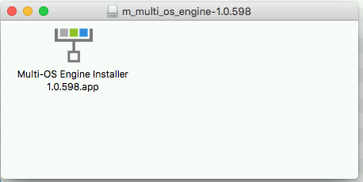
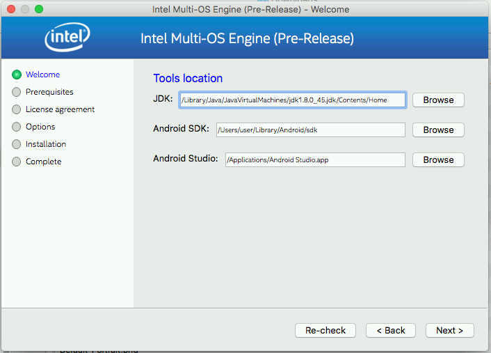
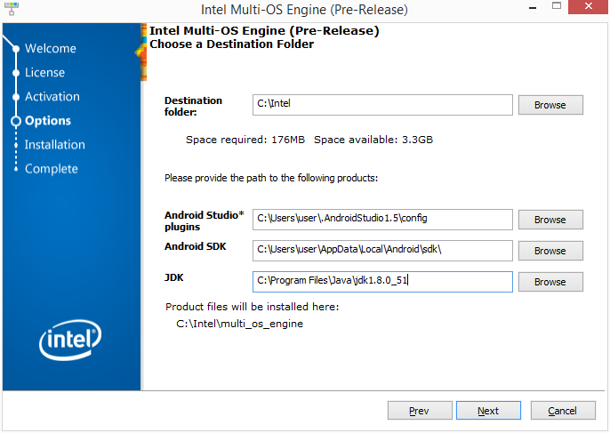

Prerequisites and Multi-OS Engine Installation¶
Working with Multi-OS Engine is easy. We provide IDE plugin for Android Studio which already has cool productivity features like auto-completion, assisted refactoring and debugging.
Prerequisites for Mac OS X hosts¶
- A computer running Mac OS X 10.9.5 or newer
- Xcode 6.1 or later
- Xcode’s Command Line Tools
- iOS 8 SDK or newer
- Oracle Java Development Kit (JDK) version 8
- Google Android Studio 1.2 or later
- Android Platform SDK with API level 9 or higher
- Enrollment in the iOS Developer Program (required for iOS device support)
Prerequisites for Windows hosts¶
- A computer running Windows 7 x64 edition or newer
- Oracle Java Development Kit (JDK) version 8
- Google Android Studio 1.2 or later
- Android Platform SDK with API level 9 or higher
- Apple iTunes for Windows
- Enrollment in the iOS Developer Program (required for iOS device support)
Install Xcode¶
The easiest way to install Xcode is from the Mac App Store. Just launch the App Store app on your Mac and search for Xcode. After you select Install, the download will start. The Command Line Tools and the iOS SDK are included in this download, so you won’t have to install those separately.
After Xcode is installed, you will have to launch it to finish the installation process. Please make sure that the :guilabel:”Command Line Tools” are correctly installed. You can trigger Command Line Tools installation by running console command:
xcode-select --install
To verify that you have successfully installed Xcode Command Line Tools, run:
$ xcode-select -p
/Applications/Xcode.app/Contents/Developer
Apple developer certificate is needed in order to run the code on a physical iPhone and iPad. Please make sure that Apple ID associated with an Apple Developer Program is added in the Accounts preferences pane in Xcode preferences. If it’s not listed, choose the + button to add it:

Make sure that you have a valid signing identity and provisioning profiles. Choose your account in the accounts preferences pane and click on “View Details”. For more please refer to the Apple Developer Documentation

Install JDK¶
Multi OS Engine supports only Java Development Kit 8. Please download the JDK 8 from Oracle web site and install it.
Install Android Studio¶
Android Studio can be installed from the Android Download Site.
Install Multi OS Engine¶
On a Mac OS X* host double-click on the DMG file and run MOE Installer application:
Provide your user password to the application to enable write access to the “/Application” directory. Make sure that the auto-detected paths Android SDK* is correct and then follow the on-screen instructions to complete the installation.
On a Windows* host run MSI installer. Make sure that the auto-detected paths to the installation directory for Android Studio* plugins and Android SDK* are correct and then follow the on-screen instructions to complete the installation.
